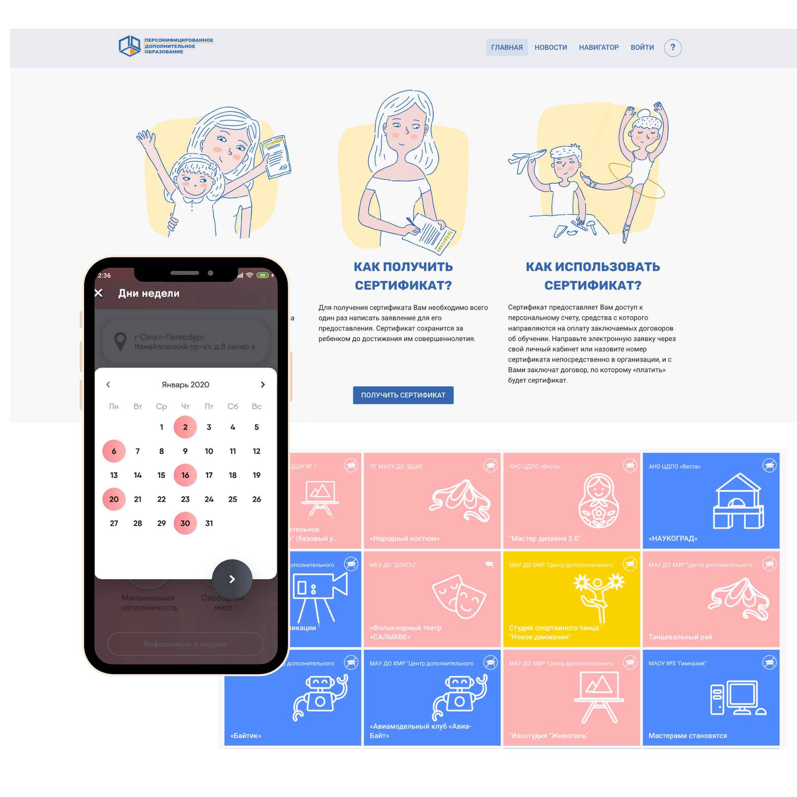
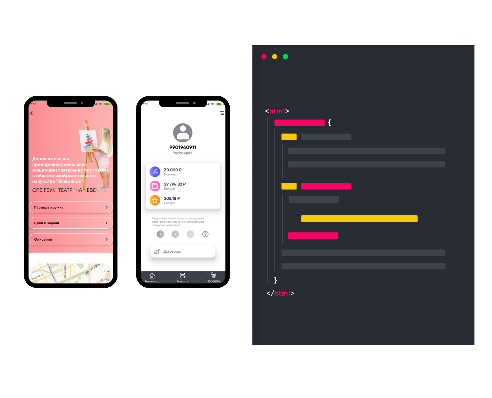

Accessible Education for Children
December 2017 - June 2018
December 2017 - June 2018

2017-2018
Involved in all web and app design stages from concept to final front end implementation
One of my major project was to redesign and implement the front-end of the website for desktop and mobile. The whole process took about 4 months before the site was ready to go live.
A mechanism of financial support for extracurricular education, designed to explore educational paths. Also allows assigning a portion of financial support for educational courses. The system is also revealing especially popular extracurriculars while also facilitating providers to respond to an actual demand.
next project